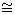
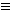
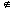

Metric and Topological Spaces
The identification topology
Recall that an equivalence relation ~ (a reflexive, symmetric, transitive relation) on a set X can be regarded as a method of partitioning X into disjoint subsets (called equivalence classes).
We shall denote the set of equivalence classes by X/~.
The identification or quotient topology gives a method of getting a topology on X/~ from a topology on X.
To see why we would want to do something like this, we will look at some examples.
Examples
- Let X be the closed unit interval [0, 1]
 R.
R.
Define an equvalence relation on X by x ~ y if and only if x = y or {x, y} = {0, 1}.
Then every point is its own equivalence class, except for {0, 1} which forms one class.
So this relation has the effect of "identifying" 0 and 1 and leaving everything else alone.
What would we like the topology to look like?
- Let X = R and define ~ by x ~ y if and only if x - y
 Z.
Z.
Then X/~ is the set of cosets R/Z of the additive group.
What would we like the topology to be?
A clue comes from group theory.
Define f: R  C - {0} by z
C - {0} by z  exp(2pit). Then ker(f) = Z and the image of f is the unit circle in the C-plane.
exp(2pit). Then ker(f) = Z and the image of f is the unit circle in the C-plane.
Thus, by the First Isomorphism Theorem of group theory, R/Z  a circle and it would be a good idea to consider it with its subspace topology inherited from the plane.
In fact these two examples are the same. To see this, take as a representative of each equivalence class ( coset) an element in [0, 1). Then every equivalence class has a unique representative, but one should arrange things so that classes with representatives close to 1 should be near the one with representative 0.
So we fix the topology so that this happens.
If we have an equivalence relation ~ on X we get a natural projection map p: X X/~ got by mapping each point to its equivalence class.
Definition
The identification topology on X/~ is defined by:
A set A X/~ is open if and only if p -1(A) is open in X.
Remarks
- This topology is the strongest ( most open sets) in which p is continuous.
- Note that p -1(A) consists of all those points whose equivalence classes are in A.
Look again at the previous examples
We have X = [0, 1] and p : X X/~ identifying the end-points of the interval. If U is a set of X/~ containing the equivalence class {0, 1} then p -1 (U) contains both 0 and 1 and hence if it is open contains a set like 
So small open sets of X/~ ( -neighbourhoods) are "the same" as those of X except "at the end-points" where they look like the sets
-neighbourhoods) are "the same" as those of X except "at the end-points" where they look like the sets  made by "gluing together two bits". It is easy to see that this is the same as the subspace topology on the circle as a subset off the plane.
made by "gluing together two bits". It is easy to see that this is the same as the subspace topology on the circle as a subset off the plane.
Topologists like to consider spaces made by "shrinking a subset to a point".
Notation
If X is a topological space and A is a subset of X, we denote by X/A the equivalence classes X/~ under the relation x ~ y if x = y or x, y A.
So for x  A, {x} is an equivalence class and A is a single class.
Examples
- The above example is [0, 1]/{0, 1}
- Let X be the closed unit disc and let A be the "boundary circle". Then X/A is homeomorphic to the unit sphere S2 R3.

Proof
Look at the "teardrop" shown and "stereoscopic projection from the "point" P to a horizontal plane. The inverse image of an open set which contains the whole boundary is then an open set which contains P. Every other point is mapped in a one-one way. It is easy to verify that this map is a homeomorphism.

JOC February 2004